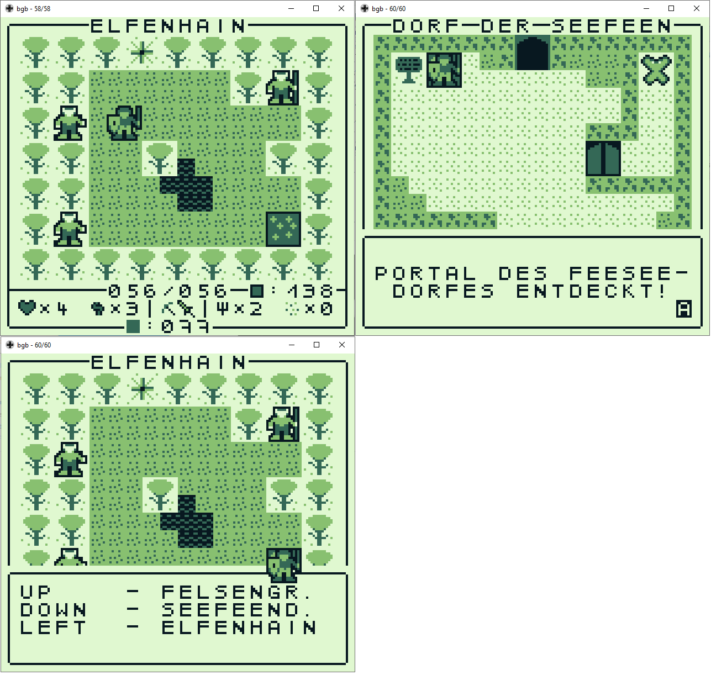
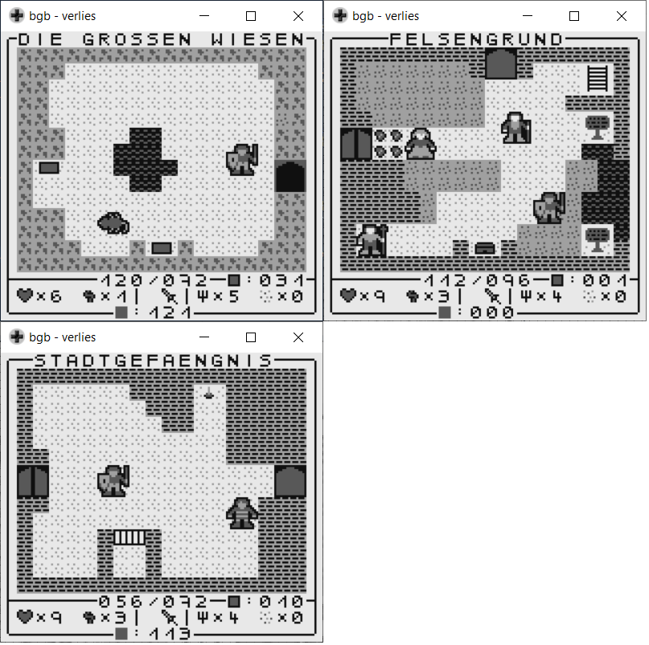
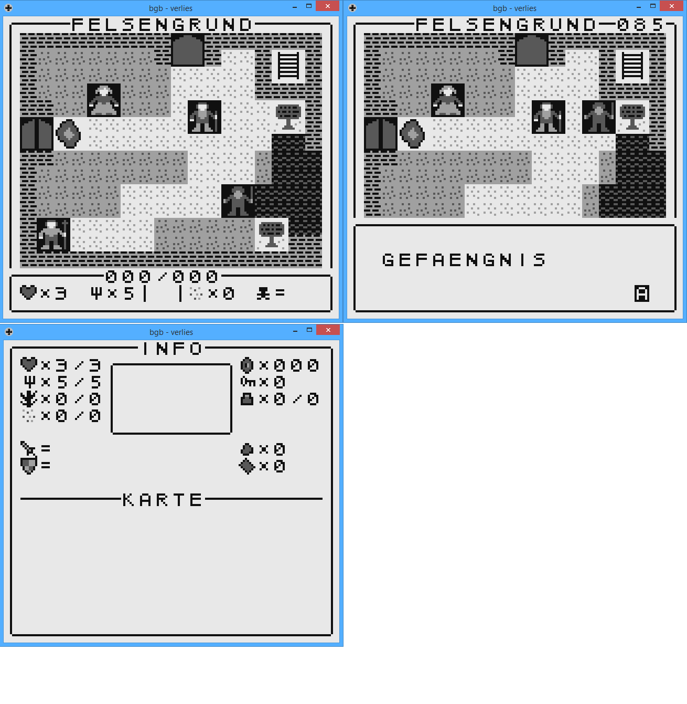
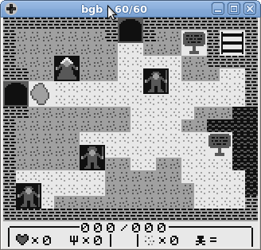
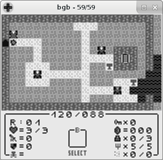
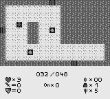
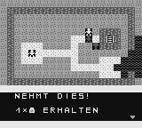
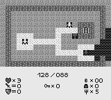

Meine Webseite
Meine Interessen und Arbeiten
[Startseite] [Artikel] [Astronomie] [Spieleentwicklung]
[GAIA] [Rechtliches]
[Gameboy]
[PC]
[Graeber]
[Graeber 2][Klauen][Verlies]
Verlies
Ein Adventure/Rollenspiel für den Gameboy. Das Grafikdesign richtet sich nach den
ersten Ultima Spielen. Spielprinzip lehnt an die frühen Zeldateile an.
News
- 15.09.2023 eine dritte Alpha wurde hochgeladen
- 08.05.2022 die zweite Alpha wurde veröffentlicht
- 13.04.2022 an der zweiten Alpha-Version wird aktuell gearbeitet. Diese wird sich primär auf
Fehlerbehebungen konzentrieren und kleinere Zusätzen in den Texten der Nichtspielercharakteren (NPCs).
Nach der Veröffentlichung wird es eine dritte Alpha geben deren Fokus die Soundeffekte sein werden. Ist
diese Verfügbar geht es auf die erste Beta des Spieles zu. Diese Version wird das komplette Spiel
beinhalten. Danach werden noch Beta-Versionen zu Fehlerbehebung folgen die dann in einer finalen Version laden.
- 17.11.2021 erste Alpha-Version ist nun verfügbar
- 08.09.2021 Wegen Gräber-2 wird der Zeitpunkt der Alpha verschoben
- 30.05.2021 Erscheinungszeitpunkt für die Alpha-Version wird auf Ende Herbst verschoben
- 25.02.2021 Erscheinungszeitraum der Alpha-Version ist für Ende Frühjahr festgelegt
- 09.12.2020 Ein neues Video wurde veröffentlicht
- 15.07.2020 Die Migration auf eine aktuelle Compilerversion ist abgeschlossen. Die Arbeiten an der Alphaversion
werden fortgesetzt.
- 21.06.2020 Das Spiel wird auf eine aktuelle Compilerversion (
https://github.com/gbdk-2020/gbdk-2020) migriert.
- 29.03.2020 Neues Bild hinzugefügt.
- 13.10.2019 Aktuell wird an der Alphaversion gearbeitet. Diese Version soll die gesamte Story und wesentliche Elemente
des Spieles beinhalten. In der Zwischenzeit wird es daher weder neue Bilder noch Videos geben.
Downloads
Onlineversion (die Emulation ist nicht perfekt!):
->
Git-Repo:
->
Rom Alphaversion 15.09.2023:
->
Rom Alphaversion 2-08.05.2022:
->
Rom Alphaversion 17.11.2021:
->
Bilder








Videos
Diese Videos liegen auf Youtube
[1]
[3]
[4]
Letzte Änderungen: 08.08.2025